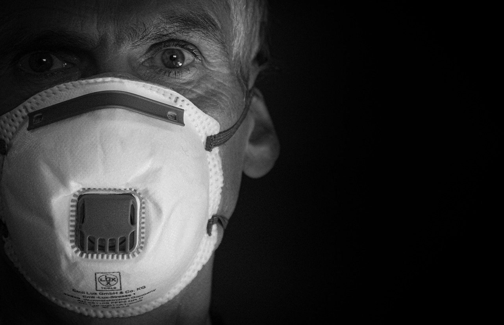

Fatos e Mitos
Mito - Hidroxicloroquina é eficaz contra o coronavírus
Um pequeno estudo realizado na França mostrou que esse remédio antimalárico pode vir a ser um medicamento promissor no combate ao vírus, mas ainda não há provas reais de sua eficácia. Existem outros remédios que estão sendo testados com o mesmo intuito. Até agora, o melhor tratamento para o coronavírus é o de suporte.
Mito - A vacina da gripe previne contra a Covid-19
A campanha de vacinação contra a gripe foi antecipada, porém não previne contra o novo coronavírus. O objetivo da antecipação foi evitar que mais uma epidemia aconteça ao mesmo tempo no país e garantir que menos casos necessitem de cuidados intensivos.
Mito - Quem pegou o novo coronavírus já está imunizado contra a doença
Embora exista alguma proteção contra reinfecção nos primeiros meses, a tendência é que essa proteção vá diminuindo ao longo do tempo. Com a disseminação de novas variantes mais transmissíveis, é possível que as reinfecções sejam mais frequentes do que antes.
Fato - Pessoas de todas as idades podem ser infectadas pela COVID-19
Qualquer indivíduo, de qualquer idade, pode ser infectado e desenvolver sintomas, inclusive quadros graves que levam à morte. Crianças e adolescentes costumam apresentar quadros leves ou mesmo ter infecção assintomática. Apesar disso, já foram registrados casos graves e até morte, nestes grupos.
Fato - As vacinas em uso contra a COVID-19 são seguras
As vacinas aprovadas para serem utilizadas em larga escala na população passaram por diversos tipos de testes e estudos com muitos voluntários. Nessas análises, os eventos adversos relatados foram, em sua grande maioria, reações leves, como dor no local da aplicação, dor de cabeça e mal-estar. Geralmente, essas reações são de curta duração, melhorando espontaneamente em um ou dois dias. Não há relatos de mortes relacionadas às vacinas. Sendo assim, de acordo com os especialistas, os benefícios da vacinação são imensamente superiores a qualquer risco relacionado a elas. Os imunizantes são seguros e devem ser utilizados pelo maior número possível de pessoas.
Fato - O uso prolongado de máscaras não causa intoxicação por dióxido de carbono (CO2) ou deficiência de oxigênio
Estudos avaliaram essa questão e, segundo especialistas, não há qualquer influência na concentração de gás carbônico no sangue a partir da utilização da máscara. Já a pessoa que usa máscara e vai fazer alguma atividade física, pode sentir um maior desconforto. Mesmo nessas situações, o que muda é apenas a percepção de esforço, não a quantidade de oxigênio que está sendo inalada. Vale enfatizar que o ar passa pela máscara tranquilamente. Só não passa o vírus. Ela não obstrui a respiração, já que é permeável ao ar. Portanto, não há motivos para deixar de usar a máscara.